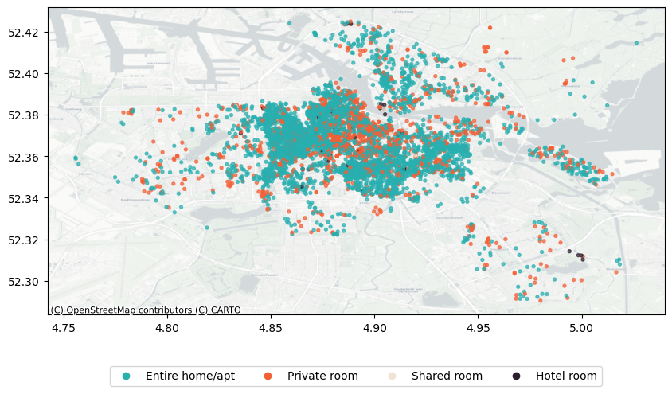
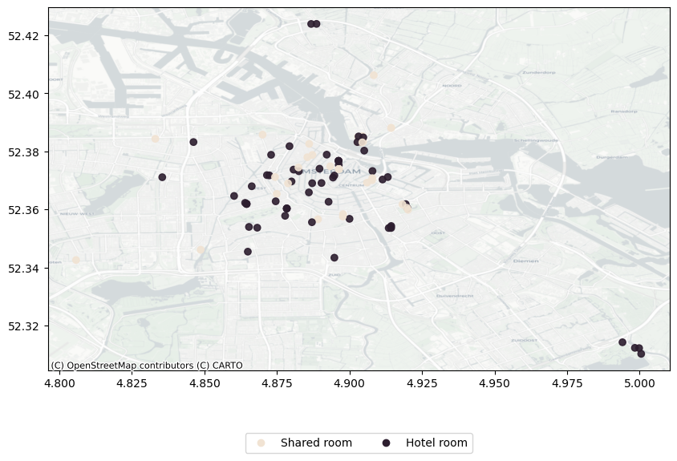
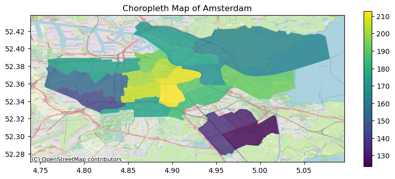
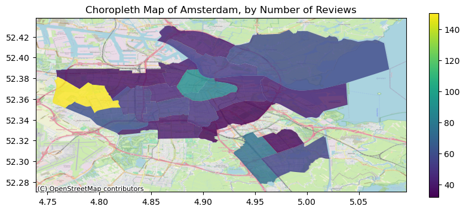

import numpy as npimport pandas as pdimport geopandas as gpdimport matplotlib.pyplot as pltimport seaborn as snsimport warningswarnings.simplefilter(action='ignore')my_colors =['#28AFB0', '#F46036', '#F1E3D3', '#2D1E2F', '#26547C', '#28AFB0']file="D:/Career/Data Science/Portfolios/Inside AirBnB - Netherlands/Amsterdam/"listings = pd.read_csv("listings_processed.csv") # processed data#calendar = pd.read_csv('calendar_processed.csv') # processed data#neighbourhoods = pd.read_csv(file + 'neighbourhoods.csv')
Maps in geopandas
GeoPandas allow to work with geospatial data in python in an easy way. GeoPandas extends the datatypes used by pandas to allow spatial operations on geometric types.
The core data structure in GeoPandas is the geopandas.GeoDataFrame, a subclass of pandas.DataFrame, that can store geometry columns and perform spatial operations. Let’s convert our dataset into a GeoDataFrame:
import contextily as ctxmy_colors =['#28AFB0', '#F46036', '#F1E3D3', '#2D1E2F', '#26547C']custom_palette = {'Entire home/apt': my_colors[0],'Private room': my_colors[1],'Shared room': my_colors[2],'Hotel room': my_colors[3]}# Map column values to colors based on your custom palettecolors = gdf['room_type'].map(custom_palette)# Plotax = gdf.plot(column='room_type', alpha=0.7, color=colors, legend=True, figsize=(10, 10), markersize=8)# Add basemap from OpenStreetMapctx.add_basemap(ax, crs=gdf.crs.to_string(), zoom=13, source=ctx.providers.CartoDB.Positron)# Create a custom legendlegend_elements = [plt.Line2D([0], [0], marker='o', color=color, label=label, linestyle='None') for label, color in custom_palette.items()]# Place legend outside the plot areaplt.legend(handles=legend_elements, loc='center', bbox_to_anchor=(0.5, -0.2), ncol=len(custom_palette))plt.show()

Figure 1: Listings by Room Type
It’s clear from Figure 1 that most of the units are either entire homes or private rooms, whose spatial distribution is more or less similar similar. Let’s focus now only on the remaining units (shared, hotels):
Code
import contextily as ctxmy_colors =['#28AFB0', '#F46036', '#F1E3D3', '#2D1E2F', '#26547C']room_filter = gdf['room_type'].isin(['Shared room', 'Hotel room'])custom_palette = {'Shared room': my_colors[2],'Hotel room': my_colors[3]}# Map column values to colors based on your custom palettecolors = gdf[room_filter]['room_type'].map(custom_palette)# Plotax = gdf[room_filter].plot(column='room_type', alpha=0.9, color=colors, legend=True, figsize=(10, 10))# Add basemap from OpenStreetMapctx.add_basemap(ax, crs=gdf.crs.to_string(), zoom=13, source=ctx.providers.CartoDB.Positron)# Create a custom legendlegend_elements = [plt.Line2D([0], [0], marker='o', color=color, label=label, linestyle='None') for label, color in custom_palette.items()]# Place legend outside the plot areaplt.legend(handles=legend_elements, loc='center', bbox_to_anchor=(0.5, -0.2), ncol=len(custom_palette))plt.show()

Figure 2: Listings by Room Type (Filtered)
Price
One way to study price patterns with maps is to just plotting the location of each units by price gradient:
Figure 3 visualizes the spatial distribution of Airbnb listings in Amsterdam, with each unit plotted according to a gradient of prices. Darker shades represent higher-priced listings, while lighter shades indicate lower-priced ones.
The initial map encountered a challenge due to the high density of listings, resulting in significant overlap that obscured meaningful patterns. This overlap made it difficult to discern spatial trends and understand price variations.
To address this issue, we opted for a choropleth map illustrating the average price by neighborhood:
import pandas as pd# Read the GeoJSON fileamsterdam_geojson_file ="neighbourhoods.geojson"# Replace with the path to your GeoJSON fileamsterdam_gdf = gpd.read_file(amsterdam_geojson_file)# Group by Neighbourhooddf_mean_p = pd.DataFrame(gdf.groupby('neighbourhood')['price'].agg('mean')).reset_index()gdf_neigh = pd.merge(amsterdam_gdf, df_mean_p, on='neighbourhood', how='inner')
Code
import contextily as ctx# Visualize the dataax = gdf_neigh.plot(column='price', alpha=0.8, legend=True, figsize=(10, 4))ctx.add_basemap(ax, crs=gdf_neigh.crs.to_string(), zoom=13, source=ctx.providers.OpenStreetMap.Mapnik)plt.title('Choropleth Map of Amsterdam, by Price')plt.xlabel('')plt.ylabel('')plt.show()

Figure 4: Listings by Price (choro)
This approach allows for a clearer depiction of spatial disparities in pricing, enabling us to identify neighborhoods with higher or lower average prices. Figure 4 shows that highest prices are concentrated in central areas, particularly those near Amsterdam Central, reflecting the premium associated with proximity to major attractions and amenities. Conversely, lower prices tend to be observed in the south-eastern regions of Amsterdam, suggesting more affordable accommodations in these areas. Meanwhile, moderate prices are prevalent in the north-eastern neighborhoods, indicating a balance between accessibility and affordability.
import contextily as ctx# Visualize the dataax = gdf_neigh_r.plot(column='number_of_reviews', alpha=0.8, legend=True, figsize=(10, 4))ctx.add_basemap(ax, crs=gdf_neigh_r.crs.to_string(), zoom=13, source=ctx.providers.OpenStreetMap.Mapnik)plt.title('Choropleth Map of Amsterdam, by Avg. Number of Reviews')plt.xlabel('')plt.ylabel('')plt.show()

Figure 5: Listings by Avg. Number of Reviews
In our analysis focusing on the average number of reviews by neighborhood, we see in Figure 5 that Lutkemeer emerged as the neighborhood with the highest average number of reviews, indicating a notable level of guest activity and engagement within this area. Following closely, central neighborhoods also demonstrated a significant presence in terms of average number of reviews, reaffirming their popularity and desirability among guests visiting Amsterdam.